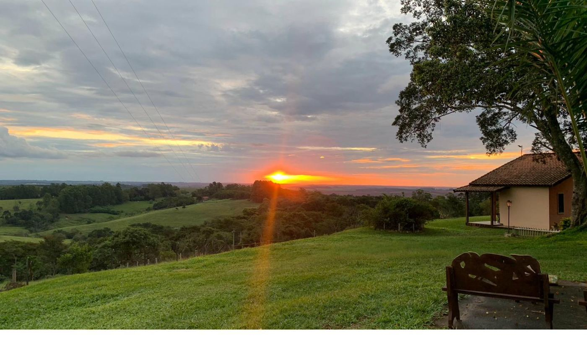
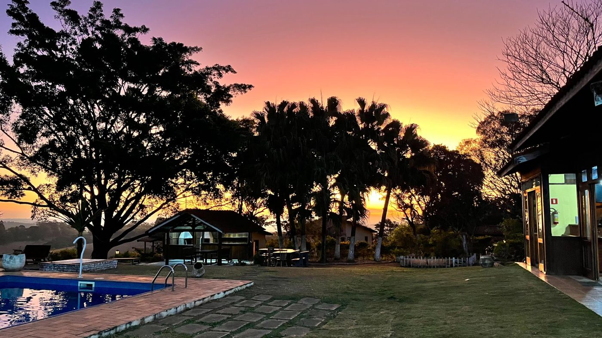
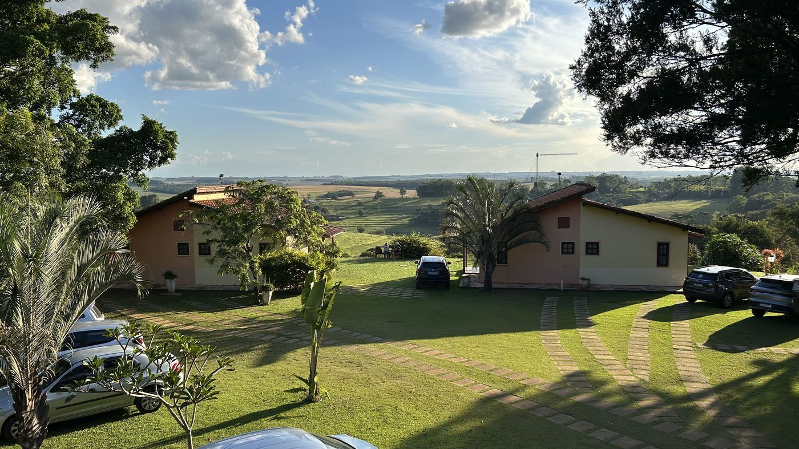
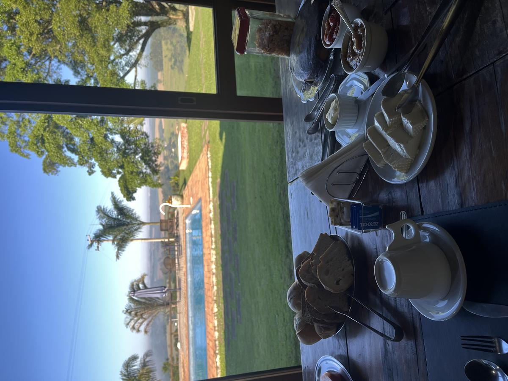
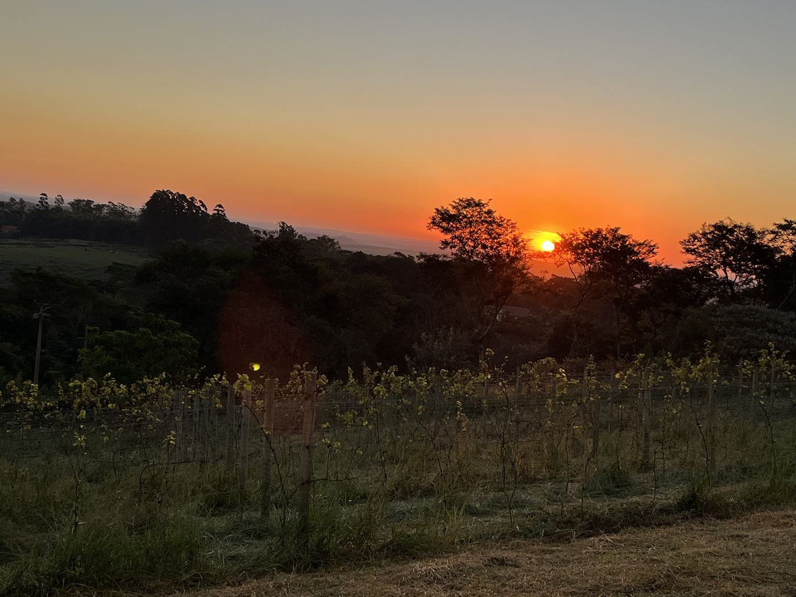
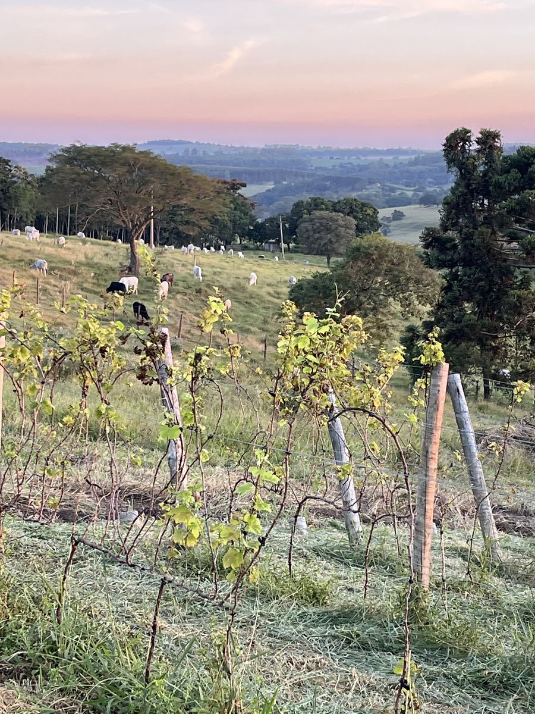
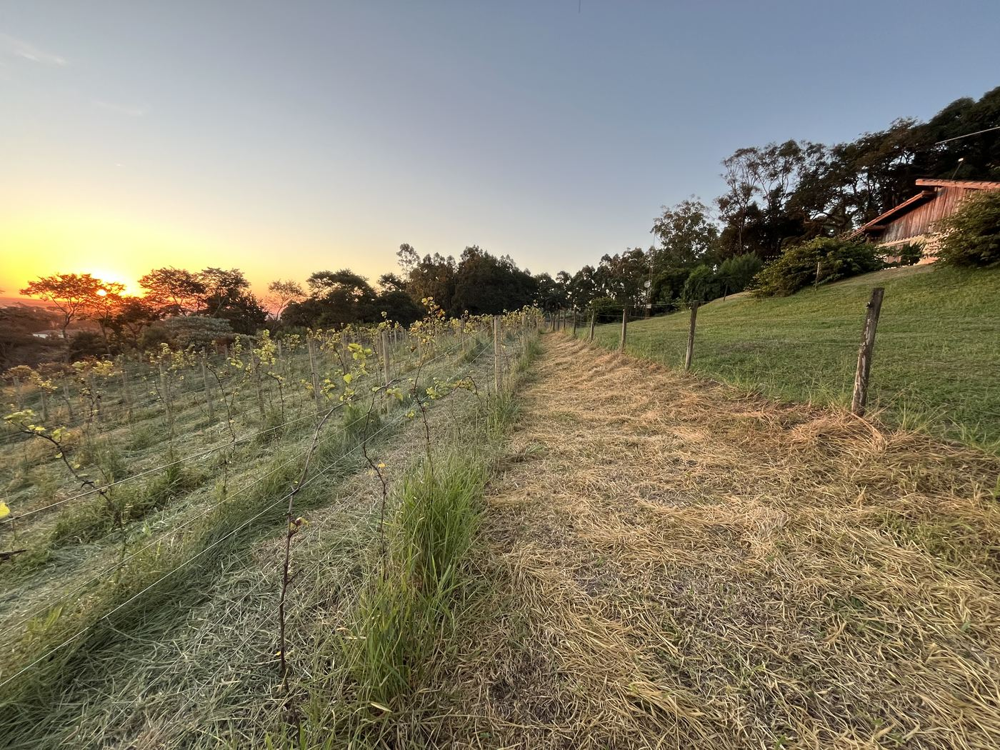
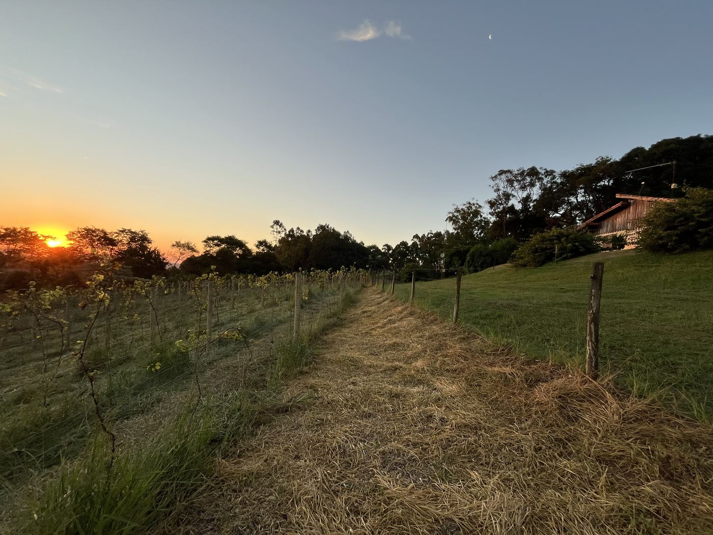

6 suítes com varanda e rede, piscina panorâmica, café da manhã com queijo artesanal e pão de fermentação natural. Parrilla de lenha nos fins de semana. A 35 km de Brotas e 15 km do Patrimônio.
Reservar pelo WhatsApp
O Recanto das Seriemas é uma pousada familiar na Serra do Itaqueri, a 990 metros de altitude, no Distrito Turístico Águas e Aventuras de São Pedro SP. São 6 suítes, cada uma com varanda privativa, rede e vista para o vale — o tipo de horizonte que redefine o que "descansar" significa.
O café da manhã é preparado com ingredientes feitos aqui: queijo fresco artesanal, pão de fermentação natural, geleias caseiras e frutas da região. Nos fins de semana, a parrilla de lenha funciona como restaurante — cortes nobres, costelinha defumada e a batata seriema que virou assinatura.
Superhost no Airbnb com ★5.0 e top 5% dos anfitriões. Negócio familiar — cada hóspede é recebido pessoalmente.
Varanda com rede, ar-condicionado, vista para o vale e o pôr do sol da serra.
Vista aberta para o vale da Serra do Itaqueri. Pôr do sol inesquecível.
Restaurante próprio com cortes nobres e costelinha defumada nos fins de semana.
Queijo fresco, pão de fermentação natural e geleias — tudo feito na propriedade.
Passeio entre as vinhas, piquenique e degustação de vinhos selecionados.
Ponto de referência do Recanto — sombra generosa, vista panorâmica e cenário de celebrações.



A cerca de 200 km (2h30–3h) de São Paulo, próxima a Campinas, Ribeirão Preto e São Carlos. A 35 km de Brotas e 15 km do Patrimônio. Na Serra do Itaqueri, entre os destinos consolidados de ecoturismo do interior paulista.
A propriedade é cercada por parreiras jovens, gado pastando e o horizonte aberto da Serra do Itaqueri. O vinhedo está crescendo — venha acompanhar. Piquenique entre as vinhas e caminhadas guiadas já disponíveis.




Combine hospedagem + parrilla + degustação de vinhos + piquenique no vinhedo. A experiência completa do Recanto das Seriemas.
Ver experiência completaReservas diretas, sem taxa de plataforma. Conte suas datas e montamos o melhor pacote.
Reservar pelo WhatsApp(11) 99112-4853 · @seriemasparrilla